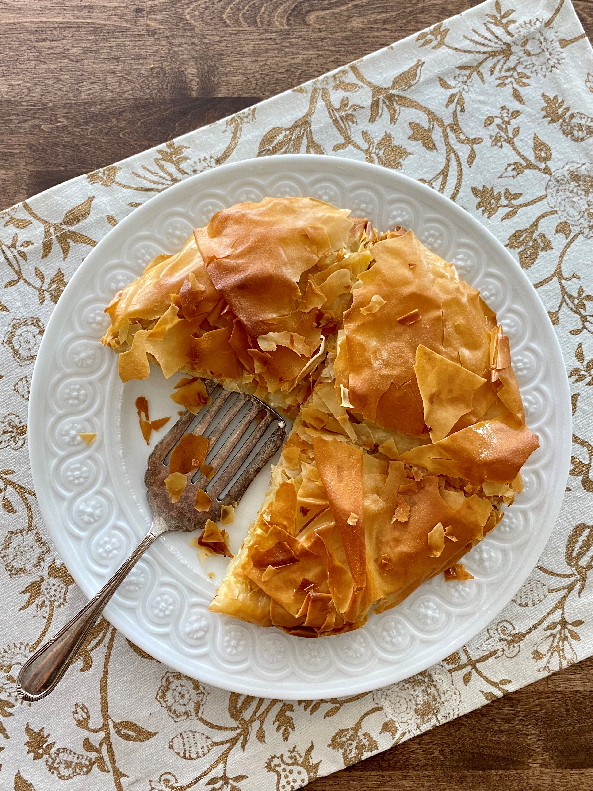

Greek Cheese Pie

Description
This is an authentic recipe for "tyropita", or Greek feta cheese pie.
Layers of crispy phyllo and a simple filling of feta cheese. You don't need anything more!
Ingredients
- 14 ounce feta cheese, crumbled
- 2 eggs
- 10 sheets phyllo dough, thawed if frozen
- 1/2 cup olive oil
Steps
- Preheat the oven to 350 degrees F (175 degrees C). Grease two 9-inch round cake pans.
- Mix feta cheese and eggs together in a bowl for the filling; set aside.
- Lay out 1 sheet of phyllo on a work surface and brush liberally with olive oil.
Top with another sheet and brush with oil. Repeat for a total of 4 sheets,
but do not brush the top of the fourth sheet. Transfer the stack of oiled sheets
to one of the greased cake pans. Drape over the bottom of the pan, trying not to
be too perfect about it; you want some folds and wrinkles in the phyllo.
- Spread 1/2 of the filling over the phyllo in an even layer. Fold the overhanging phyllo
over the filling, again letting natural folds and wrinkles occur. Loosely lay 1 sheet
of phyllo over the top, brush with oil, and use the oiled brush to pat down the sides
all around the circumference of the cake pan.
- Repeat with remaining phyllo, oil, and filling to assemble the second pie.
- Bake the cheese pies in the preheated oven until the tops are a deep golden brown,
45 to 60 minutes. Let cool for 20 minutes before slicing. Serve warm or at room
temperature.